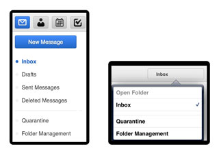
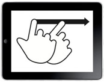
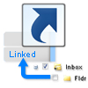
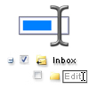
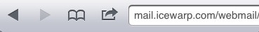

WebClient平板电脑 界面
WebClient平板电脑界面针对触摸屏和平板电脑浏览器（如iPad上的Safari，Android平板电脑上的Chrome或Kindle Fire上的Silk）的默认选项进行了优化。当您从这些设备登录时，将自动重定向到Tablet Interface 。平板电脑界面不依赖于JavaScript，因此与无法处理完整WebClient的旧版或移动版浏览器版本兼容。所有操作只需用鼠标左键单击标准网页元素，如复选框，按钮和下拉菜单。无上下文菜单或弹出窗口 。
Tap

图标工具栏可让您轻松访问所有必要的邮件和GroupWare功能，分为与上级菜单中彩色图标对应的范围。
- 电子邮件
- 地址簿
- 日历
- 任务
- 便条
- 文件
要接收新消息，请单击屏幕上方的信封图标。

要开始撰写新消息，请创建新的联系人或分发列表、新事件或会议邀请、新任务、新注释或上传新文件，单击工具栏中的相应图标，然后单击突出显示的“新建”按钮。
对于今天的邮件，仅显示时间。对于历史邮件，仅显示日期。若您想查看这两个信息，请将鼠标悬停其上 - 便可显示日期和时间。要查看完整的标题，请单击“详细信息”按钮。
旋转

左侧“水平视图”在列表中显示所有收藏夹。当前文件夹以加粗的一个点显示要添加更多文件夹到列表中，请使用文件夹管理选项。 垂直视图将文件夹列表折叠到右侧的下拉列表中。点击当前文件夹名称以访问其他文件夹选项。

“文件夹管理”选项允许您访问或创建一个尚未列出的文件夹的快捷方式，并可快速访问。它还允许添加、重命名、删除文件夹或设置默认文件夹。
滑动
支持在所有分页视图(list of emails, contacts, all calendar views and so on)中朝自然方向滑动，并允许前进或返回列表，就像翻阅书中的页面一样：
下一页：从右到左
上一页：从左到右(as on the picture above)

要使用手指滑动替代，您可用右侧的分页控件(repeated at the top and bottom for easier access)，也能显示当前位置和总页数。

您可以在邮件、联系人、备注等之间滑动。作为替代方案，打开消息后您可点击箭头至下一封或上一封邮件。
快速回复

当您不需要特殊的格式设置或设置传递选项时，“快速回复”将为您提供 - 一个回复您当前查看邮件的原始发件人的文本区域。
选择

仅适用于当前页面上的条目
- 要选择页面上的所有条目，可使用“全部”，或将选择限制为“已读”或“未读取”
- 要取消选择，请使用“取消选择”
- 使用“反选”可以选择除当前具有复选框之外的所有选项
或使用列表中每个项目旁的单个复选框进行选择，再对其执行操作。
要选择文件夹中的所有邮件，您可能需要增加“设置 - 常规”中列出的条目数。
管理

选择一个或多个项目(the checkbox is ticked)后，您可使用操作按钮(e.g. Delete, then you will be asked to confirm the deletion)对其执行操作。

您可以从“操作”中选择其他不常用的操作：“下拉菜单”(e.g. Mark As Unread, Blacklist)。
查找

键入短语以搜索当前显示的数据中(in email subjects/senders/recipients, in contact names/addresses etc.)的所有内容，或使用关键字将搜索限制为特定条件(for example, subject:office)。可用的关键字列表在此帮助末尾。
要取消搜索，请点击任何工具栏图标或文件夹，或删除搜索工具栏中的所有内容，然后单击“搜索”。
反垃圾邮件

使用文件夹列表中的“隔离”选项来访问白名单和黑名单。您可在此看到始终允许或总是拒绝的电子邮件地址。您可以删除地址或将其从黑名单移动到白名单，反之亦然。
将垃圾邮件或未经请求的商业邮件发件人添加到黑名单中：
- 在“隔离”列表中选择黑名单文件夹，然后单击“新建条目”按钮
- 在“电子邮件”视图中的电子邮件旁边添加一个复选框，然后从“操作”中选择“黑名单”：“菜单”
- 在“电子邮件”视图中的电子邮件旁边添加一个复选框，然后单击“移动”并选择
要确保您可以从“复制/移动”菜单访问“垃圾邮件”文件夹，请使用“文件夹管理”选项并将“垃圾邮件”文件夹链接到您的收藏夹列表中。
管理文件夹
链接文件夹意味着在收藏文件夹列表中创建一个此文件夹的链接。链接允许您从文件夹列表和“复制/移动”选项中轻松访问最重要的文件夹。您还可以使用描述性名称命名链接，而不需要与实际文件夹名称相对应。然后，自定义名称将显示在“文件夹管理”树中的括号里。

通过单击文件夹名称打开文件夹，这对访问左侧菜单中未链接的文件夹很有用，但您不会太频繁地访问文件夹。该文件夹将像任何已链接文件夹一样打开。

“添加文件夹”将创建一个新文件夹。您需指定文件夹类型 - 是否要将邮件、联系人或其他类型的条目存储在新文件夹中。

“重命名文件夹”将重新命名文件夹。如果左侧菜单中有该文件夹的链接，则该链接不会受到影响。

设置默认文件夹将更改接收、发送或保存邮件的位置。默认文件夹始终可从收藏夹列表中访问，无法重命名或删除。

删除文件夹将永久删除文件夹的所有内容(when you click "Empty") 或永久删除文件夹和文件夹本身的所有内容(when you click "Delete")。
自定义

“设置”按钮(between the Help and the Logout icons in the top right corner)允许您自定义平板电脑界面。各种设置显示为文件夹的类别(on left side in tall view or on the right dropdown in wide view)。

- 常规 - 可更改日期/时间格式、指定页面上的条目数、启用垃圾箱、自动将收件人添加到联系人、更改密码等
- 撰写 - 可设置为始终请求已读确认、始终将发送的消息发送到发送文件夹、编辑您的签名、更改默认字体等
- 个性化 - 可添加/编辑/删除个性化(full name and email address as it appears to the email recipient)
- 自动回复 - 具有回应功能的自动回复功能，如“回复一次”到每个收件人、仅在一天的特定时间内回复或从不对特定地址进行回复
- 转发器 - 可转发或复制已传入的电子邮件到任何其他电子邮件地址
取消
使用浏览器的“返回”按钮返回您所在的地方或取消编辑邮件、联系人、日历。您将丢失做出的任何编辑。或者只需单击任意工具栏图标。
切换

使用通往“高级界面”，“移动界面”的链接，可快速切换界面，无需再次提供登录名和密码。如果您使用的是旧版或移动浏览器，高级界面可能无法正常工作。
Smart Attach

在Android平板电脑和桌面浏览器上，您可以将附件上传到邮件。勾选复选框“使用SmartAttach”附件将存储在服务器(and in your Files) 中，并通过嵌入在电子邮件中的下载链接传送。这使得移动用户间的传送更快更有效率。
搜索关键词

并非所有关键字都适用于所有范围，例如，主题：仅适用于电子邮件。而在日历中您需要使用标题：关键字。默认情况下，多个关键字与AND运算符链接(no need to specify it)，并且必须满足所有条件，或者可以使用OR和NOT逻辑运算符，以便将以下条件设置为可选或查找不符合条件的项。
来自: 用于指定发件人(from:Amy)
发送给: 用于指定收件人 (to:David)
主题: 搜索主题词(subject:Dinner)
抄送: 用于在抄送中指定收件人：字段
密件抄送: 用于在密件抄送中指定收件人：字段
全文: 搜索完整的消息文本(fulltext:test)
优先级: 按优先级搜索最高，高，正常，低，最低(priority:high)
after: 搜索给定时间之后发送的消息(after:2004/04/16)
before: 搜索给定时间之前发送的消息(before:2004/04/16)
标题: 用于指定条目标题(title:Test)
描述: 用于指定描述或说明(description:Test)
姓名: 用于指定联系人姓名
电子邮件: 用于指定电子邮件
关键词: 搜索具有特定标签的条目(tag:Business)
标签: 搜索具有特定标签的条目(tag:Business)
greater: 按kB大小搜索(greater:1024)
smaller: 按kB大小搜索(smaller:1024)
公司: 按公司搜索联系人(company:IceWarp)
部门: 按部门搜索联系人(department:IT)
位置: 按位置搜索联系人(location:London)